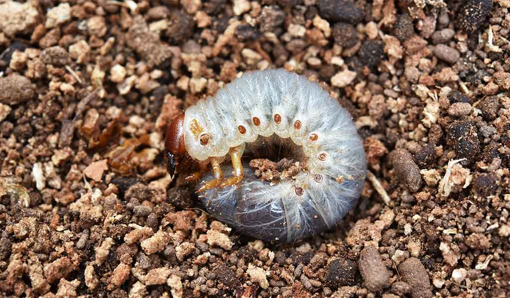
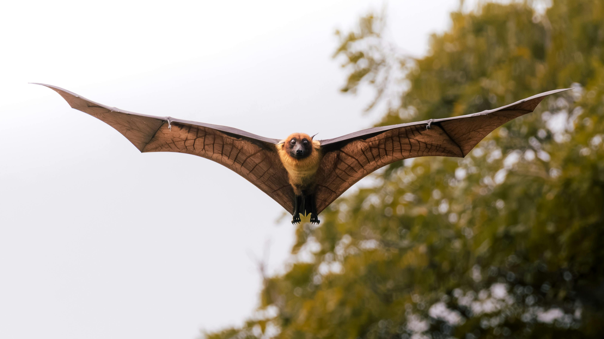

Di pagi hari yang sunyi, ketika embun masih menempel di ujung daun dan bumi belum benar-benar terbangun, para petani kopi Desa Lanjan sudah lebih dulu menyapa ladang mereka. Mereka merawat sesuatu yang lebih dari sekadar tanaman, tetapi sudah hampir seperti warisan. Seperti halnya warisan apa pun, menjaga kopi berarti juga menghadapi cobaan.
Di balik harum dan nikmat rasanya, tersembunyi keluh kesah para petani yang berjuang melawan hama-hama perusak tanaman kopi. Tidak semua musuh datang dengan wajah garang. Di Lanjan, musuh-musuh itu kecil, diam-diam, dan licik. Mereka tidak datang membawa senjata, tapi membawa kerusakan yang bisa mengubur harapan yang selama ini ditempa. Berikut adalah empat hama perusak tanaman kopi di Desa Lanjan yang seringkali mengancam kesuburan ladang.
1. Semut hitam

Barangkali tidak banyak yang mengira, bahwa semut yang sering kita abaikan dapat menjadi pengganggu besar dalam dunia perkopian. Di Desa Lanjan, semut hitam dikenal sebagai koloni yang bisa membentuk sarang di akar dan daun. Mereka mungkin tidak terlihat dari jauh, tetapi kehadirannya perlahan membuat tanaman stres sehingga menghambat lertumbuhannya dan hasil panen pun berkurang.
Selain itu, gigitan-gigitan kecil mereka kerap membuat petani tidak nyaman bekerja. Sejalan dengan hal itu, muncul penelitian oleh Muliasari (2018) yang membuktikan bahwa semut hitam disebut sebagai hama yang perlu dikendalikan karena mengganggu dari perawatan hingga panen. Mereka memang makhluk kecil, tetapi juga merugikan jika terus dibiarkan.
2. Ulat lundi
{kind=link}
Jika semut menyerang dari permukaan dan akar luar, maka ulat lundi menyerang dari bawah. Mereka menyerang dari tempat yang bahkan mata manusia enggan menatapnya terlalu lama (tanah).
Ulat ini memakan akar dari dalam. Akarnya perlahan hancur, kehilangan kekuatannya, dan suatu pagi, pohon yang sebelumnya terlihat sehat bisa roboh dalam diam. Petani kopi menyebutnya “musuh dalam senyap" yang tidak terlihat, tetapi kerusakannya begitu nyata. Sebab, keberadaan hama ini dapat merusak akar dan menurunkan kualitas tanaman.
3. Tupai

Tupai seringkali menjadi hewan yang dicintai banyak anak kecil karena wajah lucu dan gerakan nan lincah. Namun, bagi petani kopi, tupai menjadi musuh yang datang diam-diam, memilih buah kopi yang matang, menggigit sedikit, lalu menjatuhkan sisanya ke tanah.
Buah yang selama berbulan-bulan ditunggu, dirawat, disiram dengan doa dan harapan, akhirnya jatuh sia-sia hanya karena satu gigitan. Jumlah buah rusak yang ditinggalkan tupai mungkin kecil. Namun, dalam ekonomi petani, setiap butir kopi selalu punya arti. Meskipun bukan hama utama, tupai juga menyumbang dampak buruk di ladang kopi Desa Lanjan.
4. Kelelawar
Si musuh yang beraksi saat dunia terlelap dalam mimpi ini juga meresahkan petani kopi. Gerakannya cepat, suaranya tidak terdengar, dan keesokan paginya, ladang yang semalam terlihat menawan bisa jadi berantakan.
Kelelawar memakan buah kopi yang matang. Jika panen tidak segera dilakukan, kerugian bisa jadi lebih besar dari yang dibayangkan.
Rasa kopi yang kamu minum hari ini datang dari ladang yang dijaga dengan kesabaran. Penjagaan ini dilakukan oleh angan-tangan yang pantang menyerah meski diserang dari berbagai arah, salah satunya hama. Setelah mengetahui hama-hama tadi, yuk sama-sama menghargai perjuangan para petani dalam menciptakan rasa kopi yang membuatmu semangat setiap hari! Sebab, jika bukan mereka, maka kepada siapa lagi kita menggantungkan harapan pada masa depan kopi Indonesia?